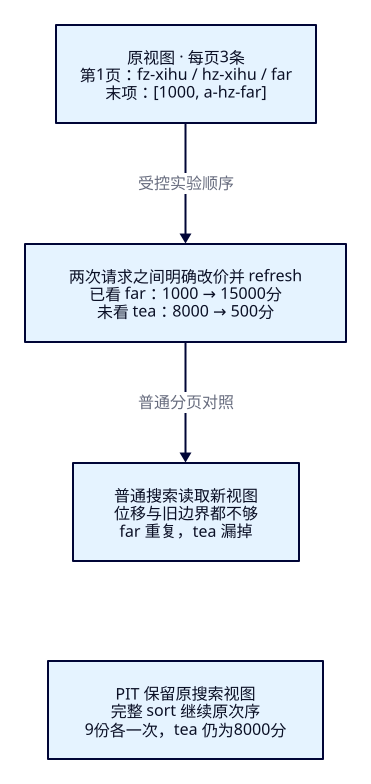
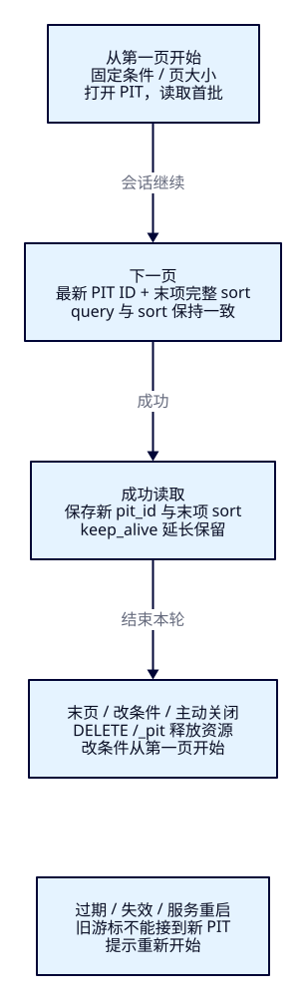

下一页，
为什么又遇见它？
F10 已让游客按价格、距离或相关性排列景点。结果变多后，游客点“下一页”，刚看过的景点却再次出现，另一个去处从来没出现。这次不再只问谁排在前面，还要约定整轮翻页看哪一份搜索视图。本课先复现问题，再用完整排序值和 PIT 把同一轮结果读完，最后处理条件变化、关闭和过期。
本课目标
- 读懂from/size窗口，在固定数据上拼回九份ID；解释窗口限制与深页成本。
- 在两页之间受控改价，复现普通分页的重漏；用PIT与完整sort得到九份各一次，并核对旧价与新价。
- 完成三种排序的REST↔Java分页对照，验证末页、换条件、旧页序、关闭/过期及重新开始，观察真实本机展示壳。
1. 排得确定，为什么仍然翻错？
Elasticsearch 是搜索与分析引擎：查询挑出符合条件的文档，排序把它们排成序列，分页只取序列的一段。F10 的唯一业务ID第二键能确定同价、同距或同分时的先后，却没有让两次请求读取同一份数据。商家改价后，文档可能跨过已经读到的边界；即使ID一直不变，位置也会改变。
想象每页三条：游客已看过一个10元景点，运营把它改到150元，它会移到后面再次出现；一个未看过的80元景点改成5元，移到游客刚跳过的前面，后续页便可能漏掉。我们想要两种明确的行为：这一轮按原视图读完；主动重新搜索时才接纳新价格。Java负责保存这一轮的条件和进度，ES保留可搜索的视图，展示壳说明当前价格来自哪一轮。它不替代实时售卖价格的复核。
2. 仍用十六份资料，只给九份命中分页
独立索引tut-f11-attractions完整复制F10的十六份固定资料与mapping，不依赖旧索引。关键词“西湖”，name^3/aliases^2/description、best_fields/AND/tie_breaker=0；全国、不选主题、无半径；CNY、明确open、非负价格且不超过20000分。开始仍有九份候选，价格升序后按唯一keyword字段attraction_id升序，页大小3。
| 页 | 原视图完整业务ID，按次序 | 票价（整数分） |
|---|---|---|
| 1 | a-fz-xihu → a-hz-xihu → a-hz-far | 0 / 0 / 1000 |
| 2 | a-hz-guide → a-hz-missing-location → a-hz-plain | 1000 / 1000 / 1000 |
| 3 | a-hz-tea → a-sh-exhibit → a-hz-boundary | 8000 / 10000 / 20000 |
免费是有效0分；缺价和null仍被range排除。缺坐标的missing-location在无半径查询中仍命中。这里的“总数9”指当前条件下的命中文档数，和索引count16不同，也不代表页大小或页数。样本业务ID与ES _id一致且唯一，这个前提不能省略。
3. f11-c01：先翻一个不变的序列
沿用ES9.4.0/Lucene10.4.0、Boot4.0.8/JDK25、官方Java与Rest5 Client9.4.8、Wrapper3.3.4/Maven3.9.11。作者应用JDK为Temurin25.0.4.1+1，与ES容器bundled JVM分开。先选JDK25；Python3仅用于配套脚本搬运动态PIT/游标，不需要额外依赖。Pages只承载教程。
cd projects/travel-search
docker compose -f infra/single-node/compose.yaml up -d es
bash infra/single-node/wait.sh
bash labs/f11/01-prepare.sh
bash labs/f11/02-offsets.sh准备六条HTTP请求依次核对版本、建索引acknowledged、green且未超时、Bulk十六项created且errors=false、refresh零失败和count16。一主零副本、strict mapping不变。脚本检查HTTP错误，200不能代替Bulk条级核对。重复创建报已存在时停止，按本课清理重做。
准备请求与固定数据
#!/usr/bin/env bash
set -euo pipefail
source "$(dirname "$0")/env.sh"
curl --fail-with-body -sS "$ES_URL/?pretty"
curl --fail-with-body -sS -X PUT "$ES_URL/tut-f11-attractions?pretty" -H 'Content-Type: application/json' --data-binary @search/f11/index.json
curl --fail-with-body -sS "$ES_URL/_cluster/health/tut-f11-attractions?wait_for_status=green&timeout=30s&pretty"
curl --fail-with-body -sS -X POST "$ES_URL/tut-f11-attractions/_bulk?pretty" -H 'Content-Type: application/x-ndjson' --data-binary @data/f11/attractions.ndjson
curl --fail-with-body -sS -X POST "$ES_URL/tut-f11-attractions/_refresh?pretty"
curl --fail-with-body -sS "$ES_URL/tut-f11-attractions/_count?pretty"4. from不是页号，size不是总数
from表示跳过多少条，从0开始；size是本次最多取多少条。若页号从1开始，每页k条，则from=(页号−1)×k。按0、3、6分别取三条，固定数据下拼回上表九份。这类偏移分页方便跳到指定浅页，但每次请求都会重新查询；它没有记住上一页。
{
"size": 3,
"track_total_hits": true,
"track_scores": false,
"_source": {
"includes": [
"attraction_id",
"name",
"city_code",
"ticket_price_fen",
"currency",
"status",
"location"
]
},
"query": {
"bool": {
"must": [
{
"multi_match": {
"query": "西湖",
"fields": [
"name^3",
"aliases^2",
"description"
],
"type": "best_fields",
"operator": "and",
"tie_breaker": 0.0
}
}
],
"filter": [
{
"term": {
"currency": {
"value": "CNY"
}
}
},
{
"range": {
"ticket_price_fen": {
"gte": 0.0,
"lte": 20000.0
}
}
},
{
"term": {
"status": {
"value": "open"
}
}
}
]
}
},
"sort": [
{
"ticket_price_fen": {
"order": "asc",
"missing": "_last"
}
},
{
"attraction_id": {
"order": "asc"
}
}
]
}三个请求只改变from。配套脚本打印完整请求和响应，请先预测第二页，再核对hits.total、完整ID、票价与sort。价格相同的六个边界位置，靠业务ID继续比较；只写价格首键，不能把偶然次序当约定。
普通索引默认index.max_result_window=10000，约束的是from+size，不是索引最多存一万条，也不是结果最多命中一万条。本课from=9999、size=3返回400“Result window is too large”，虽然语料只有16份。不要为消除报错直接调大窗口。一般Top K收集时，各分片需要保留与from+size相关的候选再合并，深页的内存/CPU负担会增加；这不表示每次都加载此前所有_source，也不是本课测出的性能数字。规模与成本测量留到F44。
5. search_after：从上一页末项之后继续
另一种办法是带上上一页最后一条的排序值，找严格排在它之后的文档，这就是search_after。原价格首屏末项far的sort是[1000,"a-hz-far"]。下一页仍用完全相同的query和sort，把整个数组原样放到search_after；不再同时设置正数from。只给1000会丢掉同价中的位置；只给ID则丢掉首键。顺序、类型和完整精度都要保留，不能从卡片的“10.00元”或四舍五入距离拼回游标。
search_after适合顺序向后读取，不能仅凭页号直接跳到第500页。它减少对越来越大的偏移窗口的依赖，但查询、评分、总数统计和取回字段仍有成本，不能称为每页恒定耗时。更关键的是，它只确定边界，仍没有固定数据视图。
6. f11-c02：先制造重漏，再冻结本轮视图
运行下一脚本。开头用固定ID重导十六份并refresh，让单独重跑也有同一前提；这次Bulk应是updated，不能记成首次created。它先取普通首屏，再打开PIT取首屏，随后一次Bulk把far从1000改15000分、tea从8000改500分，再明确refresh。这里只用替换固定资料制造两次请求之间的变化；CRUD、可见性与并发写冲突留给F12。
bash labs/f11/03-view.sh
实验中普通from/size和不带PIT的search_after都得到：第1页fz-xihu/xihu/far，第2页guide/missing-location/plain，第3页exhibit/far/boundary（省略共同城市前缀，完整ID见表与响应）。far出现两次，tea没有出现；两者总命中数仍为9，所以只比总数抓不住这个错误。固定唯一第二键也不能挽回位置变化。
PIT（point in time）让后续搜索继续使用打开时保留的索引搜索视图。它不阻塞新写入；新搜索可看到改价，而原PIT继续看到原资料版本和次序。本课只有一个主分片，不把它外推成跨索引、跨系统的业务事务、备份或永久快照。
REST先POST /tut-f11-attractions/_pit?keep_alive=1m&allow_partial_search_results=false，取响应id。后续POST /_search，在body中放pit.id与keep_alive，不在URL指定索引，也不另传routing/preference。每次响应若返回pit_id，下一次都使用最新值；不能假定它一定变化，也不能一直使用首次id。
PIT搜索通常还会附加_shard_doc作为视图内的决胜键。本课把它显式写在价格与业务ID之后，固定三项数组结构。它结合PIT内的分片编号与Lucene文档号，在本PIT内唯一且稳定，重新开PIT后不能复用；它不是业务ID或价格。即使业务ID已经唯一，也照搬响应中完整三项sort。本轮首屏末项第三项来自真实响应，不预填一个猜测值。
PIT请求基础文件：运行时再加真实pit和search_after
{
"size": 3,
"track_total_hits": true,
"track_scores": false,
"_source": {
"includes": [
"attraction_id",
"name",
"city_code",
"ticket_price_fen",
"currency",
"status",
"location"
]
},
"query": {
"bool": {
"must": [
{
"multi_match": {
"query": "西湖",
"fields": [
"name^3",
"aliases^2",
"description"
],
"type": "best_fields",
"operator": "and",
"tie_breaker": 0.0
}
}
],
"filter": [
{
"term": {
"currency": {
"value": "CNY"
}
}
},
{
"range": {
"ticket_price_fen": {
"gte": 0.0,
"lte": 20000.0
}
}
},
{
"term": {
"status": {
"value": "open"
}
}
}
]
}
},
"sort": [
{
"ticket_price_fen": {
"order": "asc",
"missing": "_last"
}
},
{
"attraction_id": {
"order": "asc"
}
},
{
"_shard_doc": {
"order": "asc"
}
}
]
}这份基础文件不能直接冒充完整PIT请求；脚本用下方流程动态填入本轮id和上一页末项sort，每个最终HTTP body都会完整打印。
def view():
restore()
body=load('search/f11/page.json');pitbody=load('search/f11/pit-page.json')
plain=search(body);assert ids(plain)==OLD[:3]
pit=call('POST',f'/{INDEX}/_pit?keep_alive=1m&allow_partial_search_results=false')['id']
closed=False
try:
pitbody['pit']={'id':pit,'keep_alive':'1m'}
fixed=search(pitbody,True);pit=fixed.get('pit_id',pit)
fixedids=ids(fixed);fixedprices=[h['_source']['ticket_price_fen'] for h in fixed['hits']['hits']]
moved=call('POST',f'/{INDEX}/_bulk',ndjson='data/f11/move-prices.ndjson')
assert not moved['errors'] and all(x['index']['result']=='updated' for x in moved['items'])
assert call('POST',f'/{INDEX}/_refresh')['_shards']['failed']==0
offsetids=ids(plain)
for offset in [3,6]: offsetids+=ids(search(dict(body,**{'from':offset})))
afterids=ids(plain);after=plain['hits']['hits'][-1]['sort']
for _ in range(2):
result=search(dict(body,search_after=after));afterids+=ids(result);after=result['hits']['hits'][-1]['sort']
assert offsetids==afterids==BROKEN
for _ in range(2):
pitbody['pit']['id']=pit
pitbody['search_after']=fixed['hits']['hits'][-1]['sort']
fixed=search(pitbody,True);pit=fixed.get('pit_id',pit)
fixedids+=ids(fixed);fixedprices += [h['_source']['ticket_price_fen'] for h in fixed['hits']['hits']]
assert fixedids==OLD and fixedprices==[0,0,1000,1000,1000,1000,8000,10000,20000]
live=search(dict(body,size=20));assert ids(live)==NEW
bad=copy.deepcopy(pitbody);bad['pit']['id']=pit;bad['search_after']=fixed['hits']['hits'][-1]['sort'][:2]
search(bad,True,expected=400)
assert call('DELETE','/_pit',{'id':pit})['succeeded'];closed=True
search(dict(pitbody,pit={'id':pit,'keep_alive':'1m'}),True,expected=404)
finally:
# Close only this experiment's latest PIT, including on failed assertions.
try:
if not closed: call('DELETE','/_pit',{'id':pit})
finally: restore()PIT页仍是原来的三组，九份各出现一次，tea仍8000分、far仍1000分。独立普通搜索的新次序则为fz-xihu/xihu/tea/guide/missing-location/plain/exhibit/far/boundary，tea500、far15000分。核对ID、次序和_source价格，才能证明读取视图不同，而不是前端把旧卡片重复展示。脚本还故意把显式三项sort截成两项，ES返回400；关闭PIT后再搜返回404。finally关闭本实验尚未关闭的最新PIT，再重导原资料并refresh，恢复到上表。
7. 一轮分页有开始，也要有结束

keep_alive=1m表示让对应搜索上下文保留供后续请求使用，每次PIT搜索可续期；只需覆盖两次操作的间隔，不必预留整次浏览的总时长。过期清理由ES后台执行，不能把1分钟当成精确到毫秒的清理时刻。打开的视图会保留旧段以及相关状态，更新/删除多或同时保留很多PIT，会增加磁盘、文件句柄和内存压力。读完、换条件或取消时用DELETE /_pit，body带最新id主动释放；不要只等过期。
关闭、过期、节点故障或服务重启后，旧游标可能失效。正确恢复是提示用户从第一页开始；不能偷偷新建PIT再接上旧sort，那已不是同一视图。作者另开1秒PIT，等待66秒且不续期后真实搜索404；Java闲置60秒的游标返回410。该等待只在附加验收，不让正常教学主流程依靠“手速够快”。
换关键词、城市、预算、排序、圆心、评分选项或页大小时，本应用明确关闭旧轮并重新开始。PIT本身只保留数据视图，不会替应用校验用户是否换了查询；ES可能接受另一个query，但它已是另一段序列。本课的409条件错误由Java契约产生，不能说成ES自动拒绝换条件。页大小限制1–5是教学应用规则，ES并不强制整轮页大小相同。
8. f11-c03：Java保存条件、真实元组与页序
从原backend启动，不另建门户。本课新增/api/attractions/pages/start、/next、/close。start输入含F10的完整search条件与pageSize；服务打开本课索引的PIT。返回cursor是Java内存会话的随机句柄；服务端保存条件、最新PIT、上一页最后一条List<FieldValue>与当前页号，客户端不重建排序边界。默认固定tut-f11-attractions，可在服务端用TRAVEL_F11_INDEX覆盖。
cd projects/travel-search/backend
./mvnw -version
./mvnw -B -ntp clean package
java -jar target/travel-search-0.7.0.jar{
"search": {
"q": "西湖",
"cityCode": "ALL",
"maxPriceFen": 20000,
"sortMode": "price",
"latitude": 30.25,
"longitude": 120.15,
"trackScores": false
},
"pageSize": 3
}请求构造复用F10三种排序和硬条件，另加显式_shard_doc；没有复制F10的index。距离模式保留km/arc与缺坐标的字符串Infinity，相关性模式保留_score降序；Java只保存ES的FieldValue，不把数字转成格式化字符串。
SearchRequest request(Session s) {
var base = sorts.request(s.input.search());
var builder = new SearchRequest.Builder().size(s.input.pageSize())
.query(base.query()).source(base.source()).sort(base.sort())
.sort(v -> v.field(f -> f.field("_shard_doc").order(SortOrder.Asc)))
.trackScores(s.input.search().trackScores()).trackTotalHits(t -> t.enabled(true))
.allowPartialSearchResults(false).pit(p -> p.id(s.pit).keepAlive(t -> t.time("1m")));
if (!s.after.isEmpty()) builder.searchAfter(s.after);
return builder.build(); // PIT carries the index; do not set index/routing/preference here.
}start失败释放已开的PIT；next核对条件与页序，防止同一个afterPage被连续消费两次。每次只允许顺序前进；重复旧页序返回409，不是重放上一页的幂等接口。网络响应丢失时，本课要求重新开始，不宣称实现了分布式重试和多实例共享游标。
public synchronized PageResult start(PageInput input) throws IOException {
reap();
if (sessions.size() >= 100) throw new PageFault(429, "PAGE_LIMIT", "本机分页会话过多，请关闭旧会话后重试。");
var opened = client.openPointInTime(o -> o.index(index).keepAlive(t -> t.time("1m"))
.allowPartialSearchResults(false));
var s = new Session(input, opened.id());
String cursor = UUID.randomUUID().toString();
try {
var result = read(cursor, s);
sessions.put(cursor, s);
return result;
} catch (IOException | RuntimeException error) { discard(cursor, s); throw error; }
}
public synchronized PageResult next(PageController.Turn turn) throws IOException {
var s = sessions.get(turn.cursor());
if (s == null) throw new PageFault(410, "PAGE_EXPIRED", "分页已关闭、过期或服务已重启，请从第一页开始。");
if (!Instant.now().isBefore(s.expires)) {
discard(turn.cursor(), s);
throw new PageFault(410, "PAGE_EXPIRED", "分页已过期，请从第一页开始。");
}
if (!s.input.equals(turn.conditions()) || s.page != turn.afterPage())
throw new PageFault(409, "PAGE_CHANGED", "条件或页序已改变，请关闭旧分页并重新搜索。");
if (s.seen >= s.total) throw new PageFault(409, "PAGE_END", "已到末页，请关闭分页或重新搜索。");
try { return read(turn.cursor(), s); }
catch (ElasticsearchException error) {
discard(turn.cursor(), s);
if (error.status() == 404) throw new PageFault(410, "PAGE_EXPIRED", "ES 搜索视图已失效，请从第一页开始。");
throw error;
} catch (IOException | RuntimeException error) {
discard(turn.cursor(), s); // A failed turn must not be silently advanced/retried.
throw error;
}
}以下读取方法完整核对超时、失败分片、精确total与字段，才推进页序；优先保存响应最新pit_id，让失败清理也指向最新视图。完整sort直接留在会话，DTO的sortValues仅用于观察。total为本轮query在PIT中的总命中数，不是“search_after之后还剩多少”；本课每页track_total_hits=true便于核对，seen累计决定hasNext，末页9条正好读完后禁用下一页，空集200也能正常关闭。
private PageResult read(String cursor, Session s) throws IOException {
var request = request(s);
var response = client.search(request, SortAttraction.class);
if (response.pitId() != null) s.pit = response.pitId(); // Keep the latest ID even before validation.
var total = response.hits().total();
if (response.timedOut() || response.shards().failed().longValue() != 0 || total == null
|| total.relation() != TotalHitsRelation.Eq || (s.page > 0 && total.value() != s.total))
throw new AttractionSearchService.IncompleteSearchException();
var hits = response.hits().hits();
var cards = hits.stream().map(hit -> {
var src = hit.source();
if (src == null || !hit.id().equals(src.attractionId()) || src.name() == null
|| src.ticketPriceFen() == null || hit.sort().size() != 3)
throw new AttractionSearchService.IncompleteSearchException();
var values = hit.sort().stream().map(v -> (Object) switch (v._kind()) {
case Long -> v.longValue();
case Double -> v.doubleValue();
case String -> v.stringValue();
default -> throw new AttractionSearchService.IncompleteSearchException();
}).toList();
return new PageResult.Card(hit.id(), src.name(), src.ticketPriceFen(), hit.score(), values);
}).toList();
long seen = s.seen + cards.size();
if (seen > total.value() || (cards.isEmpty() && seen < total.value()))
throw new AttractionSearchService.IncompleteSearchException();
if (!hits.isEmpty()) s.after = List.copyOf(hits.getLast().sort()); // No rounding/string reconstruction.
s.seen = seen; s.total = total.value(); s.page++;
s.expires = Instant.now().plusSeconds(60);
return new PageResult(cursor, s.page, s.seen < s.total, s.total, total.relation().jsonValue(),
s.input, json.readTree(JsonpUtils.toJsonString(request, client._jsonpMapper())), cards);
}关闭、到期回收与完整接口文件
public synchronized Object close(String cursor) throws IOException {
var s = sessions.get(cursor);
if (s == null) return Map.of("closed", true, "alreadyGone", true);
var response = client.closePointInTime(c -> c.id(s.pit));
if (!response.succeeded()) throw new AttractionSearchService.IncompleteSearchException();
sessions.remove(cursor);
return Map.of("closed", true, "numFreed", response.numFreed());
}
@Scheduled(fixedDelay = 5000)
public synchronized void reap() {
var now = Instant.now();
for (var entry : new ArrayList<>(sessions.entrySet()))
if (!now.isBefore(entry.getValue().expires)) discard(entry.getKey(), entry.getValue());
}
@PreDestroy
public synchronized void shutdown() {
for (var entry : new ArrayList<>(sessions.entrySet())) discard(entry.getKey(), entry.getValue());
}每5秒扫描闲置到期会话，60秒闲置后主动尝试释放；显式关闭成功才移除会话，失败可重试。异常清理尽力关闭，连接断开时由ES keep_alive兜底。服务关闭也尝试释放。全部会话进程内存保存，最多100轮、方法串行处理，适合本机观察，不是生产分页架构。完整服务 · 控制器/校验 · DTO。
bash labs/f11/04-java.sh配套流程逐个翻完price/relevance/distance三种模式，并在同一PIT中将每页Java实际DSL直接重放为REST，逐项比较ID、完整sort、原始分数和价格；三轮都得到九份不重复资料。到末页强行next返回409；关闭后next返回410；改城市或发送错误页序返回409。输入不合法400、缺索引502、连接不可用503；空集不是故障。作者另测分页中改价、ES视图被释放和闲置超时，不把这些分支仅写成说明。
9. 打开提供的分页观察页
打开http://127.0.0.1:18080/f11.html，点击“从第一页开始”，再两次“下一页”。核对页序、卡片ID、分/元和完整sort；末页按钮禁用，主动点击“关闭这一轮”。切城市或价格等条件后旧卡片与页序清空，旧轮关闭，再查询从第一页开始。观察区展示本轮条件、Java真实DSL和DTO，不要求你开发表单或前端。
浏览器只向同源Java发送请求，ES连接与凭据只留服务端；Pages不连接本机业务服务。页签离开时尝试关闭，异常离开仍靠服务端闲置回收和ES期限兜底。失败要清掉旧卡片与旧页序、提示重新开始，不能让上次成功结果冒充当前请求。F10排序页保留，本课页面专门观察分页。阅读与真实展示壳记录和ES/Java运行记录分开查看。
10. 点名清理，重新得到同一证据
bash labs/f11/cleanup.sh
bash labs/f11/01-prepare.sh
bash labs/f11/02-offsets.sh
bash labs/f11/03-view.sh
bash labs/f11/04-java.sh先关闭已知会话再删索引，仅删除tut-f11-attractions；清理200/404都可继续，未知故障必须停下。重建时十六项再次created；案例二重置资料时updated；两轮仍应得到相同完整ID次序，_shard_doc和PIT id不可拿旧值硬比较。结束后关闭自己启动的Java；框架ES原来停止则用相同compose stop es恢复，不删持久卷、不停源码篇节点。
官方依据与本课验证边界
官方分页说明、PIT保留与资源说明用于语义定位，具体行为按9.4.0实测及固定tag核对；源码哈希收据记录以下文件。
- SearchRequest.rewrite：PIT的附加排序决胜键。
- SearchAfterBuilder.buildFieldDoc：完整排序值数量与类型转换。
- DefaultSearchContext.preProcess与IndexSettings.MAX_RESULT_WINDOW_SETTING：from+size窗口与默认10000。
本课单节点单主分片、固定小语料，改价发生在明确两次读取之间；没有跑高负载、随机并发压测、多节点故障、备份恢复或性能基准。PIT不是永久可用承诺；部分分片失败/执行超时仅代码防护，未制造对应故障。当前会话入口无法设置或核验xhigh，作者自审，无独立审阅代理。
能力检查：先解释，再打开
1. 每页3条，第4页from是多少？9999+3为何在小样本上仍报错？
from=9。窗口限制检查请求的from+size，而不是先看是否真的有这么多命中；默认10000，10002超过。它不限制索引文档总量。
2. 唯一ID第二键为什么没挡住far重复、tea漏掉？
它只确定一个视图内同价时的先后。far改贵移到已看边界之后，tea改便宜移到之前，两次普通请求读取的序列变了。仅换search_after也没有冻结视图。
3. PIT响应sort有三项，只传票价和ID可以吗？
本课显式写三个sort，三项必须原样回传，截断为两项返回400。第三项_shard_doc来自本PIT，不能猜测、四舍五入、换顺序或带到新PIT。
4. 原PIT里的tea为什么仍80元？重新查询为何5元？
原搜索视图保留旧文档版本；普通新搜索读取refresh后的新值。这正是稳定浏览的代价，卡片价格不能当实时售卖报价。
5. 改成杭州、游标过期和重复发旧afterPage分别怎样恢复？
换条件本应用返回409或界面主动关闭旧轮；过期410；旧页序409。关闭旧轮，从第一页重新开始。ES自身不会为应用拒绝所有条件变化，也不能新开PIT接旧边界。
6. 独立操作：每页2条，怎样证明没有漏项或残留会话？
只改pageSize为2重启一轮，应2/2/2/2/1，合并完整ID与价格基线一致、去重9条；第五页hasNext=false，关闭返回成功。再用关闭的cursor next应410。不能只数“请求成功了五次”。
四个会让分页看似成功的陷阱
速记与下一课
| 问题 | 本课契约 |
|---|---|
| 浅页偏移 | from跳过条数，size是本页上限；关注from+size窗口 |
| 顺序继续 | search_after使用上一页末项完整sort |
| 数据变化 | PIT保持本轮视图；新搜索可读新数据 |
| 页间保持 | 同一条件、排序及最新PIT id；本应用也固定页大小 |
| 生命周期 | keep_alive续期，结束DELETE /_pit，失效从第一页开始 |
| 证明正确 | 页间完整ID、次序、价格、sort、去重集合与资源关闭 |
完整元组告诉你从哪里继续，同一视图告诉你继续看哪一轮。现在游客能稳定读完一次搜索，但运营怎样正确改价、下架、处理同时修改，写入后何时能搜到，还未系统解决。F12学习CRUD、refresh与并发冲突，并用新样本完成基础结业。